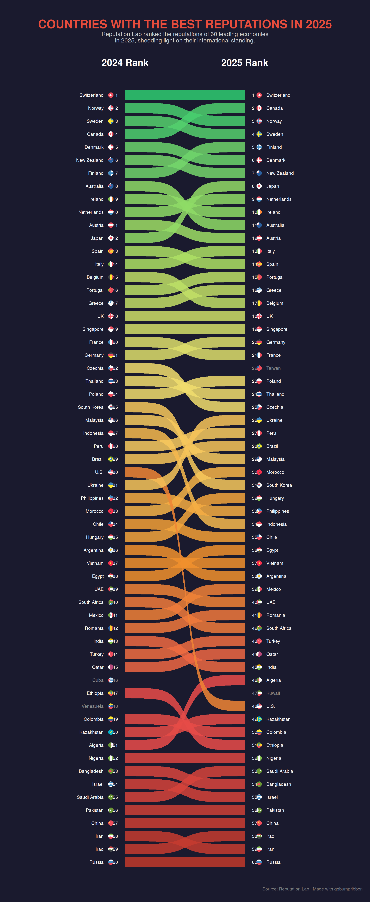
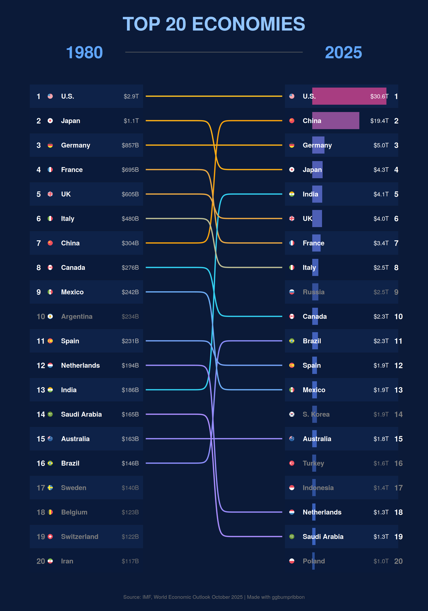
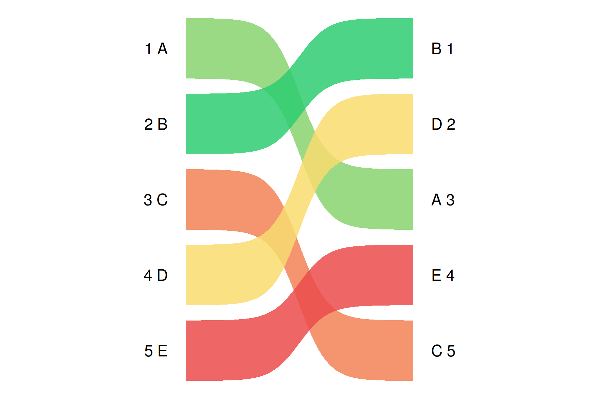
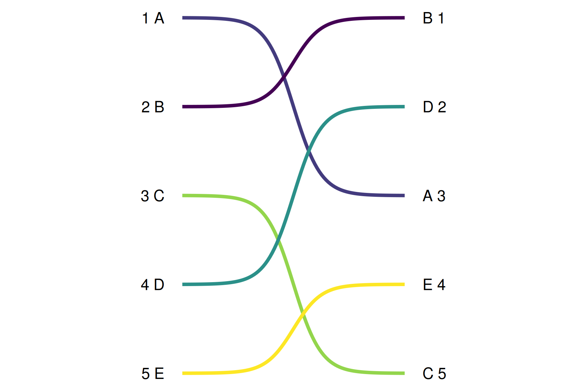
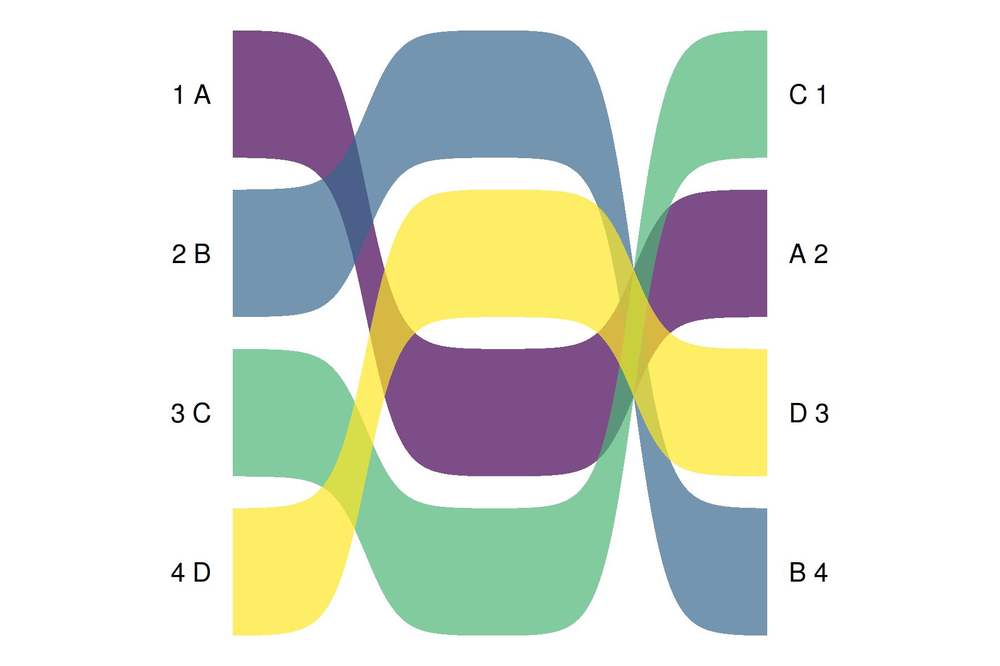
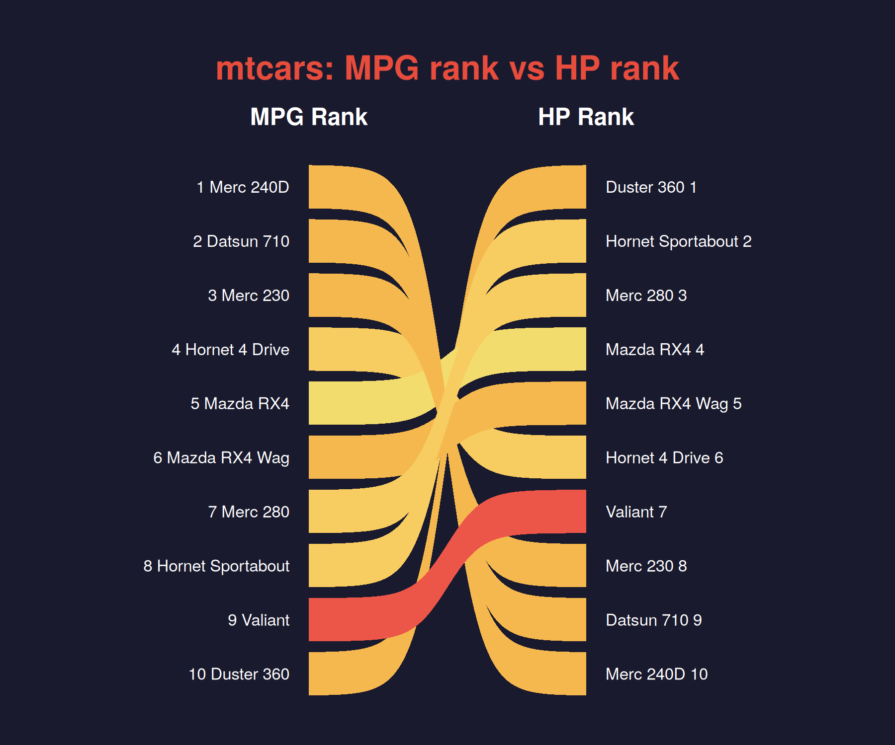
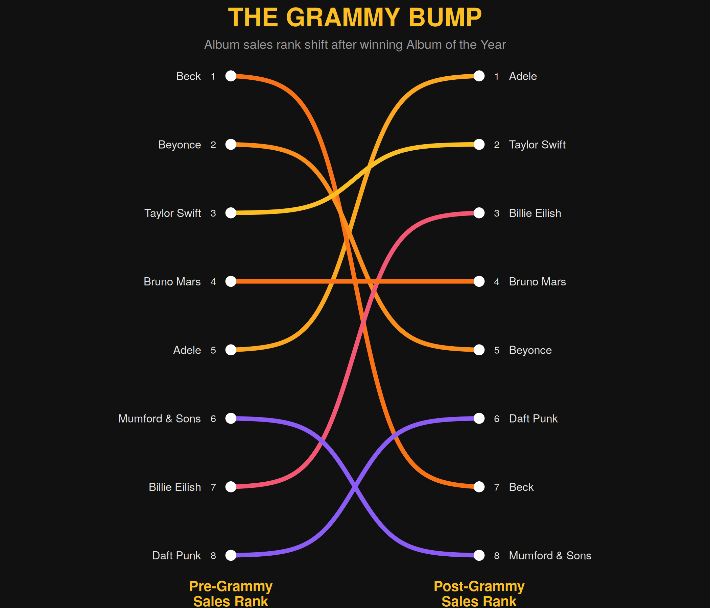
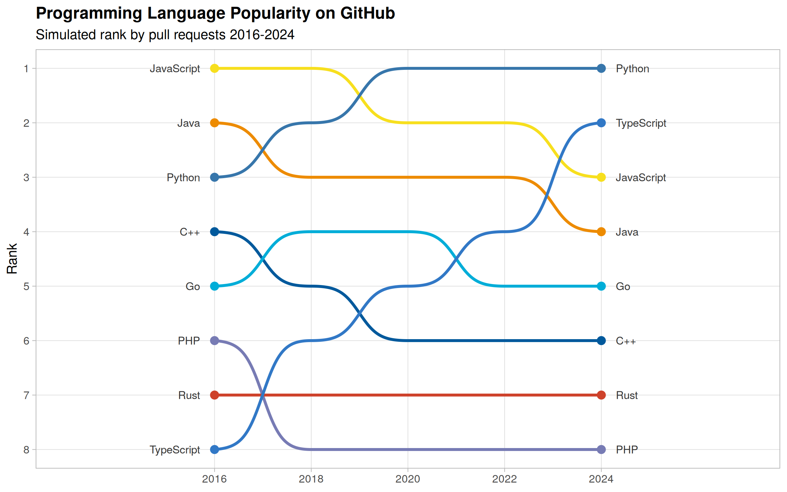
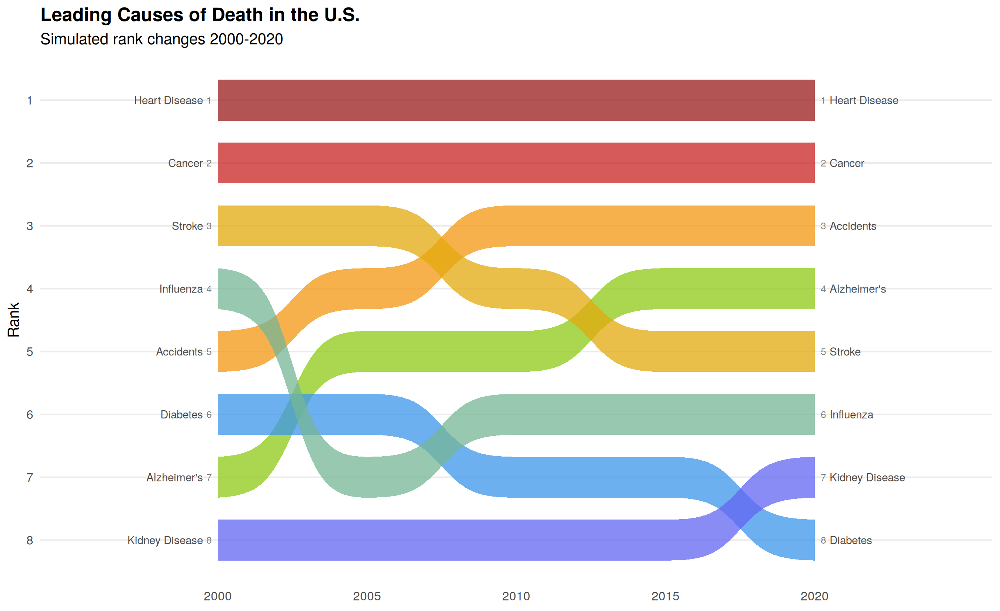
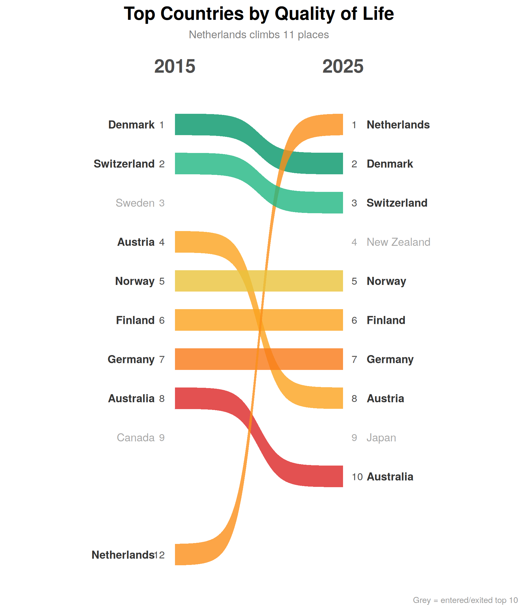

Sigmoid-curved filled ribbons and lines for rank comparison charts in ggplot2. Two geoms — geom_bump_ribbon() for filled areas and geom_bump_line() for stroked paths — with C1-continuous segment joins via logistic sigmoid or cubic Hermite interpolation.

Code to reproduce (requires ggflags + countrycode)
library(ggplot2)
library(ggbumpribbon)
library(ggflags)
library(countrycode)
ranks <- data.frame(stringsAsFactors = FALSE,
country = c("Switzerland","Norway","Sweden","Canada","Denmark","New Zealand","Finland",
"Australia","Ireland","Netherlands","Austria","Japan","Spain","Italy","Belgium",
"Portugal","Greece","UK","Singapore","France","Germany","Czechia","Thailand",
"Poland","South Korea","Malaysia","Indonesia","Peru","Brazil","U.S.","Ukraine",
"Philippines","Morocco","Chile","Hungary","Argentina","Vietnam","Egypt","UAE",
"South Africa","Mexico","Romania","India","Turkey","Qatar","Algeria","Ethiopia",
"Colombia","Kazakhstan","Nigeria","Bangladesh","Israel","Saudi Arabia","Pakistan",
"China","Iran","Iraq","Russia"),
rank_from = c(1,2,3,4,5,6,7,8,9,10,11,12,13,14,15,16,17,18,19,20,21,22,23,24,25,26,27,28,
29,30,31,32,33,34,35,36,37,38,39,40,41,42,43,44,45,51,47,49,50,52,53,54,55,56,
57,58,59,60),
rank_to = c(1,3,4,2,6,7,5,11,10,9,12,8,14,13,17,15,16,18,19,21,20,25,24,23,31,29,34,27,
28,48,26,33,30,35,32,38,37,36,40,42,39,41,45,43,44,46,51,50,49,52,54,55,53,56,
57,59,58,60))
exit_only <- data.frame(country = c("Cuba","Venezuela"), rank_from = c(46,48), stringsAsFactors = FALSE)
enter_only <- data.frame(country = c("Taiwan","Kuwait"), rank_to = c(22,47), stringsAsFactors = FALSE)
ov <- c("U.S."="us","UK"="gb","South Korea"="kr","Czechia"="cz","Taiwan"="tw","UAE"="ae")
iso <- function(x) ifelse(x %in% names(ov), ov[x],
tolower(countrycode(x, "country.name", "iso2c", warn = FALSE)))
ranks$iso2 <- iso(ranks$country)
exit_only$iso2 <- iso(exit_only$country)
enter_only$iso2 <- iso(enter_only$country)
ranks_long <- data.frame(
x = rep(1:2, each = nrow(ranks)),
y = c(ranks$rank_from, ranks$rank_to),
group = rep(ranks$country, 2),
country = rep(ranks$country, 2),
iso2 = rep(ranks$iso2, 2))
lbl_l <- ranks_long[ranks_long$x == 1, ]
lbl_r <- ranks_long[ranks_long$x == 2, ]
ggplot(ranks_long, aes(x, y, group = group, fill = after_stat(avg_y))) +
geom_bump_ribbon(alpha = 0.85, width = 0.8) +
scale_fill_gradientn(
colours = c("#2ecc71","#a8e063","#f7dc6f","#f0932b","#eb4d4b","#c0392b"),
guide = "none") +
scale_y_reverse(expand = expansion(mult = c(0.015, 0.015))) +
scale_x_continuous(limits = c(0.15, 2.85)) +
geom_text(data = lbl_l, aes(x = 0.94, y = y, label = y),
inherit.aes = FALSE, hjust = 1, colour = "white", size = 2.2) +
geom_flag(data = lbl_l, aes(x = 0.88, y = y, country = iso2),
inherit.aes = FALSE, size = 3) +
geom_text(data = lbl_l, aes(x = 0.82, y = y, label = country),
inherit.aes = FALSE, hjust = 1, colour = "white", size = 2.2) +
geom_text(data = lbl_r, aes(x = 2.06, y = y, label = y),
inherit.aes = FALSE, hjust = 0, colour = "white", size = 2.2) +
geom_flag(data = lbl_r, aes(x = 2.12, y = y, country = iso2),
inherit.aes = FALSE, size = 3) +
geom_text(data = lbl_r, aes(x = 2.18, y = y, label = country),
inherit.aes = FALSE, hjust = 0, colour = "white", size = 2.2) +
geom_text(data = exit_only, aes(x = 0.94, y = rank_from, label = rank_from),
inherit.aes = FALSE, hjust = 1, colour = "grey55", size = 2.2) +
geom_flag(data = exit_only, aes(x = 0.88, y = rank_from, country = iso2),
inherit.aes = FALSE, size = 3) +
geom_text(data = exit_only, aes(x = 0.82, y = rank_from, label = country),
inherit.aes = FALSE, hjust = 1, colour = "grey55", size = 2.2) +
geom_text(data = enter_only, aes(x = 2.06, y = rank_to, label = rank_to),
inherit.aes = FALSE, hjust = 0, colour = "grey55", size = 2.2) +
geom_flag(data = enter_only, aes(x = 2.12, y = rank_to, country = iso2),
inherit.aes = FALSE, size = 3) +
geom_text(data = enter_only, aes(x = 2.18, y = rank_to, label = country),
inherit.aes = FALSE, hjust = 0, colour = "grey55", size = 2.2) +
annotate("text", x = 1, y = -1.5, label = "2024 Rank",
colour = "white", size = 4.5, fontface = "bold") +
annotate("text", x = 2, y = -1.5, label = "2025 Rank",
colour = "white", size = 4.5, fontface = "bold") +
labs(title = "COUNTRIES WITH THE BEST REPUTATIONS IN 2025",
subtitle = "Reputation Lab ranked the reputations of 60 leading economies\nin 2025, shedding light on their international standing.",
caption = "Source: Reputation Lab | Made with ggbumpribbon") +
theme_bump()Flags require ggflags: install.packages("ggflags", repos = c("https://jimjam-slam.r-universe.dev", "https://cloud.r-project.org"))

Code to reproduce (requires ggflags + countrycode)
library(ggplot2)
library(ggbumpribbon)
library(ggflags)
library(countrycode)
both <- data.frame(stringsAsFactors = FALSE,
country = c("U.S.","Japan","Germany","France","UK","Italy","China","Canada",
"Mexico","Spain","Netherlands","India","Saudi Arabia","Australia","Brazil"),
rank_from = c(1,2,3,4,5,6,7,8,9,11,12,13,14,15,16),
rank_to = c(1,4,3,7,6,8,2,10,13,12,18,5,19,15,11),
gdp_1980 = c(2.9,1.1,0.857,0.695,0.605,0.480,0.304,0.276,
0.242,0.231,0.194,0.186,0.165,0.163,0.146),
gdp_2025 = c(30.6,4.3,5.0,3.4,4.0,2.5,19.4,2.3,1.9,1.9,1.3,4.1,1.3,1.8,2.3))
exit_only_gdp <- data.frame(stringsAsFactors = FALSE,
country = c("Argentina","Sweden","Belgium","Switzerland","Iran"),
rank_from = c(10,17,18,19,20),
gdp_1980 = c(0.234,0.140,0.123,0.122,0.117))
enter_only_gdp <- data.frame(stringsAsFactors = FALSE,
country = c("Russia","S. Korea","Turkey","Indonesia","Poland"),
rank_to = c(9,14,16,17,20),
gdp_2025 = c(2.5,1.9,1.6,1.4,1.0))
ov2 <- c("U.S."="us","UK"="gb","S. Korea"="kr","Turkey"="tr")
iso2 <- function(x) ifelse(x %in% names(ov2), ov2[x],
tolower(countrycode(x, "country.name", "iso2c", warn = FALSE)))
both$iso2 <- iso2(both$country)
exit_only_gdp$iso2 <- iso2(exit_only_gdp$country)
enter_only_gdp$iso2 <- iso2(enter_only_gdp$country)
both_long <- data.frame(
x = rep(c(1, 1.35, 1.65, 2), each = nrow(both)),
y = c(both$rank_from, both$rank_from, both$rank_to, both$rank_to),
group = rep(both$country, 4),
country = rep(both$country, 4),
iso2 = rep(both$iso2, 4))
lbl_l_gdp <- both_long[both_long$x == 1, ]
lbl_r_gdp <- both_long[both_long$x == 2, ]
fmt_gdp <- function(x) ifelse(x >= 1,
paste0("$", formatC(x, format = "f", digits = 1), "T"),
paste0("$", round(x * 1000), "B"))
both$gdp_l_label <- fmt_gdp(both$gdp_1980)
both$gdp_r_label <- fmt_gdp(both$gdp_2025)
exit_only_gdp$gdp_label <- fmt_gdp(exit_only_gdp$gdp_1980)
enter_only_gdp$gdp_label <- fmt_gdp(enter_only_gdp$gdp_2025)
gdp_max <- 31
bar_left <- 2.22
bar_width <- 0.55
bars_r <- data.frame(y = both$rank_to, xmin = bar_left,
xmax = bar_left + bar_width * (both$gdp_2025 / gdp_max), gdp = both$gdp_2025)
bars_enter <- data.frame(y = enter_only_gdp$rank_to, xmin = bar_left,
xmax = bar_left + bar_width * (enter_only_gdp$gdp_2025 / gdp_max), gdp = enter_only_gdp$gdp_2025)
row_bg_l <- data.frame(y = 1:20, xmin = 0.15, xmax = 0.98,
fill = ifelse(1:20 %% 2 == 0, "#0a1a3a", "#0e2248"))
row_bg_r <- data.frame(y = 1:20, xmin = 2.02, xmax = 2.85,
fill = ifelse(1:20 %% 2 == 0, "#0a1a3a", "#0e2248"))
bg <- "#0b1a38"
ggplot() +
geom_rect(data = row_bg_l,
aes(xmin = xmin, xmax = xmax, ymin = y - 0.48, ymax = y + 0.48),
fill = row_bg_l$fill, colour = NA) +
geom_rect(data = row_bg_r,
aes(xmin = xmin, xmax = xmax, ymin = y - 0.48, ymax = y + 0.48),
fill = row_bg_r$fill, colour = NA) +
geom_rect(data = bars_r,
aes(xmin = xmin, xmax = xmax, ymin = y - 0.35, ymax = y + 0.35),
fill = scales::seq_gradient_pal("#3b82f6", "#ec4899")(bars_r$gdp / gdp_max),
colour = NA, alpha = 0.7) +
geom_rect(data = bars_enter,
aes(xmin = xmin, xmax = xmax, ymin = y - 0.35, ymax = y + 0.35),
fill = scales::seq_gradient_pal("#3b82f6", "#ec4899")(bars_enter$gdp / gdp_max),
colour = NA, alpha = 0.5) +
geom_bump_line(data = both_long,
aes(x = x, y = y, group = group, colour = after_stat(avg_y)),
linewidth = 0.7, smooth = 10) +
scale_colour_gradientn(
colours = c("#fbbf24","#f59e0b","#22d3ee","#818cf8","#a78bfa"),
guide = "none") +
scale_y_reverse(expand = expansion(mult = c(0.03, 0.03))) +
scale_x_continuous(limits = c(0.12, 2.88)) +
geom_text(data = lbl_l_gdp, aes(x = 0.20, y = y, label = y),
inherit.aes = FALSE, hjust = 0, colour = "white", size = 3.2, fontface = "bold") +
geom_flag(data = lbl_l_gdp, aes(x = 0.30, y = y, country = iso2),
inherit.aes = FALSE, size = 2.5) +
geom_text(data = lbl_l_gdp, aes(x = 0.38, y = y, label = country),
inherit.aes = FALSE, hjust = 0, colour = "white", size = 2.8, fontface = "bold") +
geom_text(data = both, aes(x = 0.95, y = rank_from, label = gdp_l_label),
inherit.aes = FALSE, hjust = 1, colour = "grey75", size = 2.5) +
geom_flag(data = lbl_r_gdp, aes(x = 2.07, y = y, country = iso2),
inherit.aes = FALSE, size = 2.5) +
geom_text(data = lbl_r_gdp, aes(x = 2.15, y = y, label = country),
inherit.aes = FALSE, hjust = 0, colour = "white", size = 2.8, fontface = "bold") +
geom_text(data = both, aes(x = 2.78, y = rank_to, label = gdp_r_label),
inherit.aes = FALSE, hjust = 1, colour = "white", size = 2.5) +
geom_text(data = lbl_r_gdp, aes(x = 2.82, y = y, label = y),
inherit.aes = FALSE, hjust = 0, colour = "white", size = 3.2, fontface = "bold") +
geom_text(data = exit_only_gdp, aes(x = 0.20, y = rank_from, label = rank_from),
inherit.aes = FALSE, hjust = 0, colour = "grey50", size = 3.2, fontface = "bold") +
geom_flag(data = exit_only_gdp, aes(x = 0.30, y = rank_from, country = iso2),
inherit.aes = FALSE, size = 2.5) +
geom_text(data = exit_only_gdp, aes(x = 0.38, y = rank_from, label = country),
inherit.aes = FALSE, hjust = 0, colour = "grey50", size = 2.8, fontface = "bold") +
geom_text(data = exit_only_gdp, aes(x = 0.95, y = rank_from, label = gdp_label),
inherit.aes = FALSE, hjust = 1, colour = "grey45", size = 2.5) +
geom_flag(data = enter_only_gdp, aes(x = 2.07, y = rank_to, country = iso2),
inherit.aes = FALSE, size = 2.5) +
geom_text(data = enter_only_gdp, aes(x = 2.15, y = rank_to, label = country),
inherit.aes = FALSE, hjust = 0, colour = "grey50", size = 2.8, fontface = "bold") +
geom_text(data = enter_only_gdp, aes(x = 2.78, y = rank_to, label = gdp_label),
inherit.aes = FALSE, hjust = 1, colour = "grey50", size = 2.5) +
geom_text(data = enter_only_gdp, aes(x = 2.82, y = rank_to, label = rank_to),
inherit.aes = FALSE, hjust = 0, colour = "grey50", size = 3.2, fontface = "bold") +
annotate("text", x = 0.55, y = -0.8, label = "1980",
colour = "#60a5fa", size = 7, fontface = "bold") +
annotate("text", x = 2.45, y = -0.8, label = "2025",
colour = "#60a5fa", size = 7, fontface = "bold") +
annotate("segment", x = 0.85, xend = 2.15, y = -0.8, yend = -0.8,
colour = "grey40", linewidth = 0.3) +
labs(title = "TOP 20 ECONOMIES",
caption = "Source: IMF, World Economic Outlook October 2025 | Made with ggbumpribbon") +
theme_void() +
theme(plot.background = element_rect(fill = bg, colour = NA),
panel.background = element_rect(fill = bg, colour = NA),
plot.title = element_text(colour = "#93c5fd", size = 22, face = "bold",
hjust = 0.5, margin = margin(t = 12, b = 2)),
plot.caption = element_text(colour = "grey45", size = 6,
hjust = 0.5, margin = margin(t = 8, b = 5)),
plot.margin = margin(8, 8, 8, 8))Installation
install.packages("ggbumpribbon",
repos = c("https://sondreskarsten.r-universe.dev", "https://cloud.r-project.org"))Or from GitHub:
# install.packages("pak")
pak::pak("sondreskarsten/ggbumpribbon")Usage
Minimal example
library(ggplot2)
library(ggbumpribbon)
df <- data.frame(
x = rep(1:2, each = 5),
y = c(1, 2, 3, 4, 5, 3, 1, 5, 2, 4),
group = rep(LETTERS[1:5], 2)
)
lbl_l <- df[df$x == 1, ]; lbl_r <- df[df$x == 2, ]
ggplot(df, aes(x, y, group = group, fill = after_stat(avg_y))) +
geom_bump_ribbon(alpha = 0.85) +
scale_fill_gradientn(colours = c("#2ecc71", "#f7dc6f", "#eb4d4b"), guide = "none") +
scale_y_reverse() +
scale_x_continuous(limits = c(0.3, 2.7)) +
geom_text(data = lbl_l, aes(x = 0.92, y = y, label = paste(y, group)),
inherit.aes = FALSE, hjust = 1, size = 4) +
geom_text(data = lbl_r, aes(x = 2.08, y = y, label = paste(group, y)),
inherit.aes = FALSE, hjust = 0, size = 4) +
theme_void()
Lines
The line counterpart to geom_bump_ribbon(). Uses sigmoid curves between rank positions but renders as stroked paths via GeomPath instead of filled areas. Map colour = after_stat(avg_y) instead of fill.
library(ggplot2)
library(ggbumpribbon)
df <- data.frame(
x = rep(1:2, each = 5),
y = c(1, 2, 3, 4, 5, 3, 1, 5, 2, 4),
group = rep(LETTERS[1:5], 2)
)
lbl_l <- df[df$x == 1, ]; lbl_r <- df[df$x == 2, ]
ggplot(df, aes(x, y, group = group, colour = after_stat(avg_y))) +
geom_bump_line(linewidth = 1.2) +
scale_colour_viridis_c(guide = "none") +
scale_y_reverse() +
scale_x_continuous(limits = c(0.3, 2.7)) +
geom_text(data = lbl_l, aes(x = 0.92, y = y, label = paste(y, group)),
inherit.aes = FALSE, hjust = 1, size = 4) +
geom_text(data = lbl_r, aes(x = 2.08, y = y, label = paste(group, y)),
inherit.aes = FALSE, hjust = 0, size = 4) +
theme_void()
Multi-period
Ribbons and lines chain automatically across 3+ time points:
library(ggplot2)
library(ggbumpribbon)
df3 <- data.frame(
x = rep(1:3, each = 4),
y = c(1,2,3,4, 3,1,4,2, 2,4,1,3),
group = rep(LETTERS[1:4], 3)
)
lbl_l <- df3[df3$x == 1, ]; lbl_r <- df3[df3$x == 3, ]
ggplot(df3, aes(x, y, group = group, fill = after_stat(avg_y))) +
geom_bump_ribbon(alpha = 0.7) +
scale_fill_viridis_c(guide = "none") +
scale_y_reverse() +
scale_x_continuous(limits = c(0.3, 3.7)) +
geom_text(data = lbl_l, aes(x = 0.92, y = y, label = paste(y, group)),
inherit.aes = FALSE, hjust = 1, size = 4) +
geom_text(data = lbl_r, aes(x = 3.08, y = y, label = paste(group, y)),
inherit.aes = FALSE, hjust = 0, size = 4) +
theme_void()
Multi-bend curves
The number of bends is controlled entirely by the data shape, not by parameters. Two x-values per group produce one sigmoid. Four x-values — with the middle two holding position at the departure and arrival y — produce the “exit-channel-enter” pattern seen in the GDP hero above:
# 1 sigmoid: x = c(1, 2)
# 3 sigmoids: x = c(1, 1.35, 1.65, 2), y = c(from, from, to, to)Adjusting the gap between the middle x-values (1.3/1.7 vs 1.45/1.55) controls how narrow the central channel is.
Real data (mtcars)
library(ggplot2)
library(ggbumpribbon)
mt <- mtcars[1:10, ]
mt$car <- rownames(mt)
mt_long <- data.frame(
x = rep(1:2, each = 10),
y = c(rank(-mt$mpg, ties.method = "first"), rank(-mt$hp, ties.method = "first")),
group = rep(mt$car, 2)
)
lbl_l <- mt_long[mt_long$x == 1, ]; lbl_r <- mt_long[mt_long$x == 2, ]
ggplot(mt_long, aes(x, y, group = group, fill = after_stat(avg_y))) +
geom_bump_ribbon() +
scale_fill_rank(limits = c(1, 10)) +
scale_y_reverse() +
scale_x_continuous(limits = c(0.1, 2.9)) +
geom_text(data = lbl_l, aes(x = 0.93, y = y, label = paste(y, group)),
inherit.aes = FALSE, hjust = 1, colour = "white", size = 2.8) +
geom_text(data = lbl_r, aes(x = 2.07, y = y, label = paste(group, y)),
inherit.aes = FALSE, hjust = 0, colour = "white", size = 2.8) +
annotate("text", x = 1, y = -0.3, label = "MPG Rank", colour = "white",
size = 4, fontface = "bold") +
annotate("text", x = 2, y = -0.3, label = "HP Rank", colour = "white",
size = 4, fontface = "bold") +
labs(title = "mtcars: MPG rank vs HP rank") +
theme_bump()
Gallery
1. The Grammy Bump — slope chart
library(ggplot2)
library(ggbumpribbon)
grammy <- data.frame(stringsAsFactors = FALSE,
group = c("Adele","Taylor Swift","Billie Eilish","Beyonce",
"Daft Punk","Bruno Mars","Mumford & Sons","Beck"),
rank_from = c(5, 3, 7, 2, 8, 4, 6, 1),
rank_to = c(1, 2, 3, 5, 6, 4, 8, 7))
df <- data.frame(
x = rep(1:2, each = 8), y = c(grammy$rank_from, grammy$rank_to),
group = rep(grammy$group, 2))
lbl_l <- df[df$x == 1, ]; lbl_r <- df[df$x == 2, ]
ggplot(df, aes(x, y, group = group, colour = after_stat(avg_y))) +
geom_bump_line(linewidth = 1.5, smooth = 6) +
geom_point(aes(x, y), data = df, inherit.aes = FALSE, size = 3, colour = "white") +
scale_colour_gradientn(colours = c("#fbbf24","#f97316","#ec4899","#8b5cf6"),
guide = "none") +
scale_y_reverse(breaks = 1:8) +
scale_x_continuous(limits = c(0.2, 2.8), breaks = 1:2,
labels = c("Pre-Grammy\nSales Rank", "Post-Grammy\nSales Rank")) +
geom_text(data = lbl_l, aes(x = 0.94, y = y, label = y), inherit.aes = FALSE,
hjust = 1, colour = "grey90", size = 2.5) +
geom_text(data = lbl_l, aes(x = 0.88, y = y, label = group), inherit.aes = FALSE,
hjust = 1, colour = "grey90", size = 2.8) +
geom_text(data = lbl_r, aes(x = 2.06, y = y, label = y), inherit.aes = FALSE,
hjust = 0, colour = "grey90", size = 2.5) +
geom_text(data = lbl_r, aes(x = 2.12, y = y, label = group), inherit.aes = FALSE,
hjust = 0, colour = "grey90", size = 2.8) +
labs(title = "THE GRAMMY BUMP",
subtitle = "Album sales rank shift after winning Album of the Year") +
theme_void() +
theme(plot.background = element_rect(fill = "#111111", colour = NA),
panel.background = element_rect(fill = "#111111", colour = NA),
axis.text.x = element_text(colour = "#fbbf24", size = 10, face = "bold"),
plot.title = element_text(colour = "#fbbf24", size = 18, face = "bold", hjust = 0.5),
plot.subtitle = element_text(colour = "grey60", size = 9, hjust = 0.5))
2. Programming Languages — multi-period lines
library(ggplot2)
library(ggbumpribbon)
langs <- c("Python","JavaScript","Java","TypeScript","Go","C++","Rust","PHP")
df <- data.frame(stringsAsFactors = FALSE,
group = rep(langs, 5),
x = rep(c(2016, 2018, 2020, 2022, 2024), each = 8),
y = c(3,1,2,8,5,4,7,6, 2,1,3,6,4,5,7,8, 1,2,3,5,4,6,7,8,
1,2,3,4,5,6,7,8, 1,3,4,2,5,6,7,8))
lbl_l <- df[df$x == 2016, ]; lbl_r <- df[df$x == 2024, ]
ggplot(df, aes(x, y, group = group, colour = group)) +
geom_bump_line(linewidth = 1, smooth = 5) +
geom_point(data = df[df$x %in% c(2016, 2024), ],
aes(x, y, colour = group), inherit.aes = FALSE, size = 2.5) +
scale_colour_manual(values = c(Python="#3776AB",JavaScript="#F7DF1E",Java="#ED8B00",
TypeScript="#3178C6",Go="#00ADD8",`C++`="#00599C",
Rust="#CE422B",PHP="#777BB4"), guide = "none") +
scale_y_reverse(breaks = 1:8) +
scale_x_continuous(limits = c(2013, 2027), breaks = c(2016,2018,2020,2022,2024)) +
geom_text(data = lbl_l, aes(x = 2015.7, y = y, label = group),
inherit.aes = FALSE, hjust = 1, size = 2.8, colour = "grey20") +
geom_text(data = lbl_r, aes(x = 2024.3, y = y, label = group),
inherit.aes = FALSE, hjust = 0, size = 2.8, colour = "grey20") +
labs(title = "Programming Language Popularity on GitHub",
subtitle = "Simulated rank by pull requests 2016-2024", x = NULL, y = "Rank") +
theme_light(base_size = 10) +
theme(panel.grid.minor = element_blank(), plot.title = element_text(face = "bold"))
3. Leading Causes of Death — multi-period ribbon
library(ggplot2)
library(ggbumpribbon)
causes <- c("Heart Disease","Cancer","Accidents","Stroke",
"Diabetes","Alzheimer's","Influenza","Kidney Disease")
df <- data.frame(stringsAsFactors = FALSE,
group = rep(causes, 5),
x = rep(c(2000, 2005, 2010, 2015, 2020), each = 8),
y = c(1,2,5,3,6,7,4,8, 1,2,4,3,6,5,7,8, 1,2,3,4,7,5,6,8,
1,2,3,5,7,4,6,8, 1,2,3,5,8,4,6,7))
lbl_l <- df[df$x == 2000, ]; lbl_r <- df[df$x == 2020, ]
ggplot(df, aes(x, y, group = group, fill = after_stat(avg_y))) +
geom_bump_ribbon(alpha = 0.75, width = 0.65, smooth = 5) +
scale_fill_gradientn(colours = c("#991b1b","#dc2626","#f59e0b","#84cc16","#0ea5e9","#6366f1"),
guide = "none") +
scale_y_reverse(breaks = 1:8) +
scale_x_continuous(limits = c(1995.5, 2024.5), breaks = c(2000,2005,2010,2015,2020)) +
geom_text(data = lbl_l, aes(x = 1999.5, y = y, label = group),
inherit.aes = FALSE, hjust = 1, size = 2.5, colour = "grey30") +
geom_text(data = lbl_l, aes(x = 1999.8, y = y, label = y),
inherit.aes = FALSE, hjust = 1, size = 2.2, colour = "grey50") +
geom_text(data = lbl_r, aes(x = 2020.5, y = y, label = group),
inherit.aes = FALSE, hjust = 0, size = 2.5, colour = "grey30") +
geom_text(data = lbl_r, aes(x = 2020.2, y = y, label = y),
inherit.aes = FALSE, hjust = 0, size = 2.2, colour = "grey50") +
labs(title = "Leading Causes of Death in the U.S.",
subtitle = "Simulated rank changes 2000-2020", x = NULL, y = "Rank") +
theme_minimal(base_size = 10) +
theme(panel.grid.minor = element_blank(), panel.grid.major.x = element_blank(),
plot.title = element_text(face = "bold"))
4. Quality of Life — slope ribbon with entries/exits
library(ggplot2)
library(ggbumpribbon)
both <- data.frame(stringsAsFactors = FALSE,
group = c("Netherlands","Denmark","Switzerland","Norway","Finland",
"Germany","Austria","Australia"),
rank_from = c(12, 1, 2, 5, 6, 7, 4, 8),
rank_to = c(1, 2, 3, 5, 6, 7, 8, 10))
exit_only <- data.frame(group = c("Sweden","Canada"), rank_from = c(3, 9))
enter_only <- data.frame(group = c("New Zealand","Japan"), rank_to = c(4, 9))
df <- data.frame(x = rep(1:2, each = nrow(both)),
y = c(both$rank_from, both$rank_to),
group = rep(both$group, 2))
lbl_l <- df[df$x == 1, ]; lbl_r <- df[df$x == 2, ]
ggplot(df, aes(x, y, group = group, fill = after_stat(avg_y))) +
geom_bump_ribbon(alpha = 0.8, width = 0.55) +
scale_fill_gradientn(colours = c("#059669","#34d399","#fbbf24","#f97316","#dc2626"),
guide = "none") +
scale_y_reverse(breaks = 1:12) +
scale_x_continuous(limits = c(0.1, 2.9), breaks = 1:2, labels = c("2015","2025")) +
geom_text(data = lbl_l, aes(x = 0.94, y = y, label = y),
inherit.aes = FALSE, hjust = 1, colour = "grey30", size = 3) +
geom_text(data = lbl_l, aes(x = 0.88, y = y, label = group),
inherit.aes = FALSE, hjust = 1, colour = "grey20", size = 3.2, fontface = "bold") +
geom_text(data = lbl_r, aes(x = 2.05, y = y, label = y),
inherit.aes = FALSE, hjust = 0, colour = "grey30", size = 3) +
geom_text(data = lbl_r, aes(x = 2.14, y = y, label = group),
inherit.aes = FALSE, hjust = 0, colour = "grey20", size = 3.2, fontface = "bold") +
geom_text(data = exit_only, aes(x = 0.94, y = rank_from, label = rank_from),
inherit.aes = FALSE, hjust = 1, colour = "grey65", size = 3) +
geom_text(data = exit_only, aes(x = 0.88, y = rank_from, label = group),
inherit.aes = FALSE, hjust = 1, colour = "grey65", size = 3.2) +
geom_text(data = enter_only, aes(x = 2.05, y = rank_to, label = rank_to),
inherit.aes = FALSE, hjust = 0, colour = "grey65", size = 3) +
geom_text(data = enter_only, aes(x = 2.14, y = rank_to, label = group),
inherit.aes = FALSE, hjust = 0, colour = "grey65", size = 3.2) +
annotate("text", x = 1, y = -0.5, label = "2015", colour = "grey30",
size = 5.5, fontface = "bold") +
annotate("text", x = 2, y = -0.5, label = "2025", colour = "grey30",
size = 5.5, fontface = "bold") +
labs(title = "Top Countries by Quality of Life",
subtitle = "Netherlands climbs 11 places",
caption = "Grey = entered/exited top 10") +
theme_void() +
theme(plot.title = element_text(face = "bold", size = 15, hjust = 0.5),
plot.subtitle = element_text(colour = "grey50", size = 9, hjust = 0.5),
plot.caption = element_text(colour = "grey60", size = 7, hjust = 1))
Reference
Parameters
| Parameter | Default | Description |
|---|---|---|
method |
"sigmoid" |
Interpolation method: "sigmoid" (logistic S-curve with C1 correction) or "hermite" (cubic Hermite smoothstep). See Interpolation methods below |
smooth |
8 |
Steepness of the sigmoid curve. Higher = sharper S-shape. Only used when method = "sigmoid"
|
width |
0.8 |
Ribbon full width in data units (geom_bump_ribbon() only) |
n |
100 |
Interpolation points per segment (must be >= 2) |
Computed variables
| Variable | Description |
|---|---|
avg_y |
Mean of y values in the group, inverse-transformed to original data space. Works with scale_y_reverse(). |
ymin |
Lower ribbon boundary (geom_bump_ribbon() only) |
ymax |
Upper ribbon boundary (geom_bump_ribbon() only) |
Functions
| Function | Description |
|---|---|
geom_bump_ribbon() |
Smooth-curved filled ribbon between rank positions. Supports method = "sigmoid" (default) and method = "hermite". Uses GeomRibbon. |
geom_bump_line() |
Smooth-curved line between rank positions. Same method parameter. Uses GeomPath. |
scale_fill_rank() |
Green-yellow-red gradient scale with guide = "none". Defaults to auto-range from data; pass limits = c(lo, hi) for explicit control |
theme_bump() |
Dark background theme for rank comparison infographics |
Interpolation methods
When a group has 3+ time points, adjacent curved segments must be joined smoothly. Both geoms offer two methods via the method parameter, each guaranteeing C1 (first-derivative) continuity at every segment join:
method = "sigmoid" (default) — each segment follows a logistic sigmoid σ(t) = 1/(1+e⁻ᵗ), clamped to exact knot values and with a Hermite-basis derivative correction at interior knots. This preserves the classic ggbump S-curve shape and honours the smooth parameter. smooth controls steepness: lower values (2–3) produce gentle curves, higher values (12–15) approach step functions.
method = "hermite" — evaluates a single cubic Hermite spline (stats::splinefunH()) with zero slopes at all knots. Visually similar to sigmoid (the smoothstep polynomial 3t²−2t³ closely approximates the logistic) but computed in one pass. The smooth parameter is ignored.
Architecture
geom_bump_ribbon(method = "sigmoid" | "hermite"):
User data (x, y, group)
→ StatBumpRibbon$compute_group()
→ smooth_path(method) for upper + lower edges at y ± width/2
→ "sigmoid": smooth_path_sigmoid() — clamped logistic + Hermite correction
→ "hermite": smooth_path_hermite() — stats::splinefunH() with zero slopes
→ returns data.frame(x, y, ymin, ymax, avg_y)
→ GeomRibbon renders filled area
geom_bump_line(method = "sigmoid" | "hermite"):
User data (x, y, group)
→ StatBumpLine$compute_group()
→ smooth_path(method) for centerline at y
→ returns data.frame(x, y, avg_y)
→ GeomPath renders stroked path
Both Stats share smooth_path(), the avg_y inverse-transform, and C1 continuity at joins.Comparison
| Package | What it does | What it lacks |
|---|---|---|
| ggbump | Sigmoid lines via geom_bump()
|
No filled ribbons |
| ggforce | Bezier ribbons via geom_diagonal_wide()
|
Bezier, not sigmoid curve shape |
| ggsankey | Sankey-style ribbon bumps | Stacked positioning, not rank-positioned. GitHub-only |
| ggbumpribbon | C1-continuous sigmoid filled ribbons and lines at exact rank positions | — |
Dependencies
Hard: ggplot2 (>= 3.5.0), cli, rlang, scales — all are already ggplot2 dependencies. The "hermite" method uses stats::splinefunH() from base R.